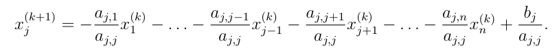
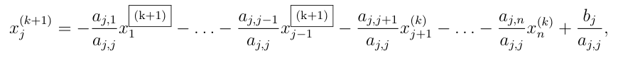
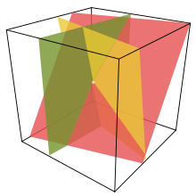

Iterační metody lineární algebry#
V této kapitole si ukážeme několik iterativních metod pro řešení úloh z lineární algebry, konkrétně opět řešení soustavy lineárních rovnic a hledání vlastních čísel.
import numpy as np
import scipy.linalg as la
import matplotlib.pyplot as plt
Iterační metody pro řešení soustavy lineárních rovnic#
V této části budeme pokračovat s řešením úlohy:
Iterační metody, nebo jinak relaxační metody, hledají řešení jiným způsobem než metody přímé. Fungují na principu postupného zlepšování výsledku podle iteračního vzorce. V jakých případech se vyplatí použít iteračích metod?
Typickým příkladem je soustava, kde počítat inverzi je výpočetně náročné a řešení lze získat rychleji. Například pro soustavy s řídkou, ale velkou maticí, Gaussova eliminace trvá řádově \(O(N^3)\). Oproti tomu, jak uvidíme, jeden krok iteračních metod je pouze \(O(N^2)\)! Pokud tedy bude stačit méně iterací než \(N\), je velmi výhodné takovou metodu použít.
Iterační metody můžou být výhodné dále v situaci, kdy máme přibližnou představu, jak řešení vypadá, a stačí se k přesnému řešení pouze přiblížit.
Naopak nevýhodou těchto metod je omezení, na které matice je lze použít. Přesto jsou tyto metody velmi užitečné, jelikož existuje řada úloh, kde tyto omezení nevadí. V kontextu iteračních metod nás zajímají následující typy matic:
Diagonálně dominantní matice - Matice \(\mathbb{A}\) je diagonálně dominantní, pokud:
Pozitivně definitní matice - Čtvercová matice je pozitivně definitní, pokud:
Symetrická matice je pozitivně definitní právě tehdy, když má všechna vlastní čísla kladná.
Diagonálně dominantní matice vznikají například při konstrukci schémat (numerických metod) na řešení parciálních diferenciálních rovnic (viz poslední kapitola).
Shrnutí
Výhody:
postupné zpřesnění odhadu
rychlejší pro velké (a řídké) matice, při rychlé konvergenci iterační metody
nedochází k tak silnému kumulovaní chyb, jako u přímých metod!
Nevýhody:
lze použít jen na úzkou třídu matic, ne obecně jako Gaussova eliminační metoda
Iterační proces obecně
Na začátku máme určitý odhad \(\vec{x}_0\) řešení soustavy lineárních rovnic \(\mathbb{A} \vec{x} = \vec{b}\). Ten buď známe díky nějaké externí informaci, nebo prostě zvolíme náhodný vektor. U těchto metod se chceme vyhnout přímému výpočtu inverze \(\mathbb{A}^{-1}\), násobení čtvercových matic a jiným operacím, které jsou pomalé (složitosti \(O(N^3)\)). Jeden krok přiblížení k přesnému řešení je obecného tvaru:
Matice \(\mathbb{B}_k\) musí splňovat:
kde \(\vec{x}\) je řešení soustavy. Tedy \(\vec{x}\) musí být pevným bodem této rekurentní funkce.
Pro konvergenci je tedy nutné a stačí, aby:
Dělení metod:
stacionární - matice \(\mathbb{B}_k = \mathbb{B}\) je konstantní, stejná v každé iteraci
nestacionární - matice \(\mathbb{B}_k\) nejsou konstantní, volí se pro každou iteraci zvlášť
Dále si ukážeme pouze metody stacionární, které jsou výrazně jednodušší v praxi implementovat na počítači.
Co musí splňovat matice \(\mathbb{B}\), aby metoda konvergovala?
Pro všechna vlastní čísla matice \(\mathbb{B}\) musí platit: \(|\lambda_i| < 1\).
Pokud v některé maticové normě platí \(\Vert\mathbb{B}\Vert < 1\), pak iterace konvergují.
Odhad chyby
Abychom věděli, kdy metodu zastavit, potřebujeme znát odhad chyby, tedy jak blízko jsme přesné hodnotě. Budeme chtít iterovat, dokud nebude platit:
což lze odhadnout pomocí:
Prostá iterace#
Jednoduchý způsob, jak získat iterační vztah je převedení soustavy \(\mathbb{A} \vec{x} = \vec{b}\) na tvar:
kde \(\mathbb{I}\) je jednotková (identitní) matice. Tím máme splňenou podmínku pevného bodu. Prostá iterace je tedy dána vztahem:
kde \(\mathbb{B} = \mathbb{I} - \mathbb{A}\). V praxi se tato metoda nepoužívá, jelikož konverguje velmi pomalu a lze ji použít pro velmi úzkou třídu matic (\(\Vert \mathbb{I} - \mathbb{A} \Vert < 1\)).
Jacobiho metoda#
V následujících třech iteračních metodách je postup velmi podobný, založený na následujícím rozdělení matice:
kde \(\mathbb{L}\) je dolní trojúhelníková, \(\mathbb{D}\) diagonální a \(\mathbb{R}\) je horní trojúhelníková matice.
Matice \(\mathbb{L}\) a \(\mathbb{R}\) jsou odlišné od matic LU rozkladu! Zde tyto matice mají nulovou diagonálu a vznikají rozkladem matice \(\mathbb{A}\) na součet matic, ne součin. Tedy sdílejí s maticí \(\mathbb{A}\) stejné prvky.
Doplňte tělo funkce ldr(A), která rozděluje matici A na matice \(\mathbb{L}\), \(\mathbb{D}\) a \(\mathbb{R}\).
def ldr(A):
## DOPLŇTE ##
L = np.zeros(A.shape)
D = np.zeros(A.shape)
R = np.zeros(A.shape)
for i in range(A.shape[0]):
D[i,i] = A[i,i]
L[i,:i] = A[i,:i]
R[i,i+1:] = A[i,i+1:]
return L, D, R
A = np.random.rand(4,4)
print(A)
L, D, R = ldr(A)
print(L)
print(D)
print(R)
[[0.40685083 0.0987364 0.88443776 0.8123548 ]
[0.7049531 0.55596574 0.99293254 0.4229024 ]
[0.64012522 0.26821229 0.58313732 0.66651336]
[0.42945011 0.96957952 0.42179813 0.74955596]]
[[0. 0. 0. 0. ]
[0.7049531 0. 0. 0. ]
[0.64012522 0.26821229 0. 0. ]
[0.42945011 0.96957952 0.42179813 0. ]]
[[0.40685083 0. 0. 0. ]
[0. 0.55596574 0. 0. ]
[0. 0. 0.58313732 0. ]
[0. 0. 0. 0.74955596]]
[[0. 0.0987364 0.88443776 0.8123548 ]
[0. 0. 0.99293254 0.4229024 ]
[0. 0. 0. 0.66651336]
[0. 0. 0. 0. ]]
Pro získání kroku Jacobiho metody nahradíme matici \(\mathbb{A}\) jejím rozkladem:
Jedna iterace je tedy dána vztahem:
kde \(\mathbb{B} = -\mathbb{D}^{-1}(\mathbb{L} + \mathbb{R})\).
Po složkách:

Lze ukazát, že Jacobiho metoda konverguje pro diagonálně domimantní matice.
Implementujte iterační Jacobiho metodu a ověřte pomocí knihovní funkce scipy.linalg.solve(). Parametr n je zvolený počet kroků metody.
Pro násobění matic nebo matic a vektoru použijte funkci np.dot() nebo operátoru @.
def jacobi(A, x0, b, n):
## DOPLŇTE ##
x = x0
L, D, R = ldr(A)
Dinv = np.diag(1 / D.diagonal())
for i in range(n):
x = - Dinv @ (L + R) @ x + Dinv @ b
return x
m = 4
A = np.random.rand(m,m) + m*np.eye(m) # diagonalne dominantni matice
b = np.random.rand(m)
x0 = np.random.rand(m)
x = jacobi(A,x0,b,n=10)
print(x, la.solve(A,b))
print(la.norm(x - la.solve(A,b)), )
[ 0.13589438 0.11056183 -0.02005707 0.12641707] [ 0.13588969 0.11055624 -0.02006049 0.12641312]
8.976173601742306e-06
V každé iteraci sice dochází k násobení čtvercových matic, ale jelikož jsou speciálního tvaru (diagonální a trojúhelníková), lze násobení provést výrazně rychleji!
Gauss-Seidelova metoda#
Gauss-Seidelova metoda je velmi podobná Jacobiho metodě. Opět nahradíme matici \(\mathbb{A}\) jejím rozkladem, akorát prohodíme pořadí matic:
Jedna iterace je tedy dána vztahem:
kde \(\mathbb{B} = -(\mathbb{L} + \mathbb{D})^{-1} \mathbb{R}\).
Po složkách:

Výhoda této úpravy je v tom, že v každé iteraci, pro výpočet \(j\)-té složky řešení využíváme znalosti již napočítaných (aktualizovaných) složek vektoru \(\vec{x}\). To vede k rychlejší konvergenci. Tato metoda je navíc konvergentní pro symetrické pozitivně definitní matice.
Implementujte iterační Gauss-Seidelovu metodu a ověřte pomocí knihovní funkce scipy.linalg.solve(). Potřebujeme se vyhnout přímému výpočtu \((\mathbb{L} + \mathbb{D})^{-1}\). Jaký postup z minulé kapitoly můžeme použít? Parametr n je zvolený počet kroků metody.
def dopredna_substituce(A, b):
x = np.zeros(A.shape[0])
for i in range(0,A.shape[0]):
x[i] = b[i] / A[i,i]
for j in range(0,i):
x[i] -= A[i,j]*x[j] / A[i,i]
return x
def gauss_seidel(A, x0, b, n):
## DOPLŇTE ##
x = x0
L, D, R = ldr(A)
for _ in range(n):
x = dopredna_substituce(L + D, b - R @ x)
return x
m = 4
A = np.random.rand(m,m) + m*np.eye(m) # diagonalne dominantni matice
b = np.random.rand(m)
x0 = np.random.rand(m)
x = gauss_seidel(A,x0,b,n=10)
print(x, la.solve(A,b))
[0.1184046 0.08610834 0.16969683 0.02222401] [0.1184046 0.08610834 0.16969683 0.02222401]
Superrelaxační metoda#
Gauss-Seidelova metoda konverguje již pro širší třídu matic, ale konvergence může stále být v některých případech pomalá. Konvergence je možné dále urychlit. Superrelaxační metoda je dána následovně:
kde \(\Delta \vec{x}^{(k)} = \vec{x}^{(k+1)} - \vec{x}^{(k)}\) je rozdíl mezi dvěma kroky Gauss-Seidelovy metody (\(\vec{x}^{(k+1)}_{GS}\) je výsledek Gauss-Seidlovy metody v iteraci \(k\)).
Relaxační faktor \(\omega\) lze volit z intervalu \((0, 2)\) (aby metoda konvergovala), obvykle se však v praxi volí \(\omega \in [1,2)\). Tento faktor slouží k urychlení konvergence metody tím, že zvětší velikost kroku Gauss-Seidlovy metody. Lze ukázat, že optimální hodnota relaxačního faktoru má tvar:
kde \(\rho(\mathbb{B}) = \text{max}(|\lambda_1|,|\lambda_2|,\dots,|\lambda_n|)\) je spektrární poloměr a \(\mathbb{B} = -(\mathbb{L} + \mathbb{D})^{-1} \mathbb{R}\) je iterační matice Gauss-Seidelovy metody. Pro spektrární poloměr je potřeba znát pro danou úlohu alespoň přibližný analytický vzorec nebo ho odhadnout numericky.
Implementujte superrelaxační metodu s optimálním parametrem. Pro získání největšího vlastního čísla použijte np.max(np.abs(np.linalg.eig(B)[0])). Inverzi matice \(B\) spočítejte pomocí scipy.linalg.inv(B). Parametr n je zvolený počet kroků metody.
A = np.random.rand(4,4)
print(np.max(np.abs(np.linalg.eig(A)[0])))
1.8724761414822968
def super_relax(A, x0, b, n):
## DOPLŇTE ##
L, D, R = ldr(A)
B = - la.inv(L + D) @ R
rho = np.max(np.abs(np.linalg.eig(B)[0]))
omega_opt = 2 / (1 + np.sqrt(1 - rho**2))
#print((5 * np.log(10))/(-np.log(rho)))
#print(omega_opt)
x = x0
for i in range(n):
x = (1 - omega_opt) * x + omega_opt * gauss_seidel(A, x, b, 1)
return x
m = 10
A = np.random.rand(m,m) - m*np.eye(m) # diagonalne dominantni matice
b = np.random.rand(m)
x0 = np.random.rand(m) + m
x1 = gauss_seidel(A,x0,b,n=10)
x2 = super_relax(A,x0,b,n=10)
x = la.solve(A,b)
print(la.norm(x1 - x))
print(la.norm(x2 - x))
#print(x)
7.120533327024301e-06
4.638592846044153e-06
Srovnání konvergence iteračních metod#
m = 40
q = -0.6 # pro -0.6
A = np.random.rand(m,m) + q*m*np.eye(m) # diagonalne dominantni matice
#A = np.random.rand(m, m) + m*np.eye(m)
#A = np.dot(A, A.transpose()) # nahodna symetricka pozitivne definitni matice
b = np.random.rand(m)
x0 = np.random.rand(m)
x = la.solve(A,b)
err_jacobi = [la.norm(x0 - x)]
err_gauss_seidel = [la.norm(x0 - x)]
err_super_relax = [la.norm(x0 - x)]
x_jacobi = x0
x_gauss_seidel = x0
x_super_relax = x0
N = 150
nn = np.arange(N)
for i in nn:
x_jacobi = jacobi(A, x_jacobi, b, 1)
x_gauss_seidel = gauss_seidel(A, x_gauss_seidel, b, 1)
x_super_relax = super_relax(A, x_super_relax, b, 1)
err_jacobi.append(la.norm(x_jacobi - x))
err_gauss_seidel.append(la.norm(x_gauss_seidel - x))
err_super_relax.append(la.norm(x_super_relax - x))
nn = np.append(nn, [N])
plt.plot(nn, err_jacobi, label='Jacobi')
plt.plot(nn, err_gauss_seidel, label='Gauss-Seidel')
plt.plot(nn, err_super_relax, label='Superrelax')
plt.yscale('log')
plt.legend();
Hledání vlastních čísel matice#
Částečný problém vlastních čísel#
Cílem této metody je nalézt pouze největší vlastní číslo v absolutní hodnotě (spektrární poloměr). Metodu lze aplikovat na diagonalizovatelné matice:
kde \(\mathbb{R}\) je regulární matice a \(\mathbb{D}\) je diagonální matice, jejíž diagonální prvky odpovídají vlastním číslům. Sloupce matice \(\mathbb{R}\) odpovídají vlastním vektorům.
Iterační metoda pro nalezení největšího vlastního čísla začíná z počátečního odhadu \(\vec{v}_0\), který postupně zpřesňuje pomocí vztahu:
Tato metoda konverguje za následujících podmínek:
Matice \(\mathbb{A}\) má jedno vlastní číslo výrazně větší v absolutní hodnotě než zbylá vlastní čísla.
Startující vektor \(\vec{v}_0\) má nenulový příspěvek do směru vlastního vektoru odpovídajícímu největšímu vlastnímu číslu. Tedy \(\vec{v}_{0} \cdot \vec{v} \neq 0\), kde \(\mathbb{A}\vec{v} = \lambda \vec{v}\) a \(\lambda = \max_i{|\lambda_i|}\).
Ukázky z praxe#
S řešením soustav lineáních rovnic se lze setkat téměř v každém technickém odvětví. Typicky dostáváme úlohu tohoto tvaru důsledkem několika vzájemných lineárních závislostí většího počtu veličin a čílem je nalézt průnik, tedy kdy jsou všechny rovnice splněny.

V kvantové mechanice je naprosto zásadní znalost matic operátorů (v dáné bázi) a nalezení vlastních čísel, které například odpovídají energetickým hladinám kvantového systému.
V numerice se mnoho úloh redukuje na soustavu lineárních rovnic, jelikož jí dokážeme snadno řešit na počítači. Pro nás je nejrelevantnějším příkladem řešení úloh popsaných pomocí různých diferenciálních rovnic (viz kapitola 11).